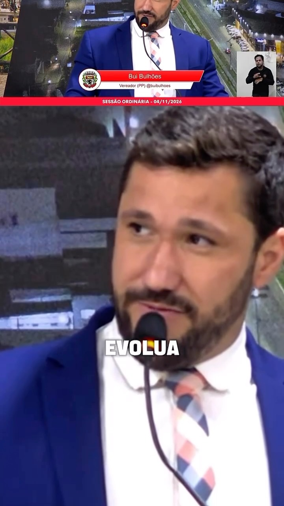

Professores e universitários
Quem pode dar aulas, monitorias, revisões ou corrigir redações.
Rede de multiplicadores
O Anésia Cauaçu já alcançou mais de 56 cidades baianas. Para chegar a toda a Bahia, precisamos de gente no território disposto a organizar uma turma local e acreditar junto com a gente que a juventude merece estudar perto de casa.

O que é ser multiplicador
Multiplicadora é a pessoa que articula tudo por perto: encontra um espaço, mobiliza os estudantes, ajuda na organização e mantém a turma funcionando.
Quem pode dar aulas, monitorias, revisões ou corrigir redações.
Grêmios, coletivos juvenis, cursinhos locais e escolas que querem somar.
Instituições que podem ceder espaço e mobilizar a comunidade.
Apoio com material, transporte, alimentação ou estrutura.
Pessoas que conhecem o território e chegam a quem mais precisa.
Quem já passou pelo Anésia e quer devolver à comunidade o que recebeu.
Passo a passo
Um caminho construído junto, com acompanhamento da associação.
Você preenche o formulário contando da sua cidade, sua atuação e o que pode oferecer.
Nossa equipe entra em contato, conhece o contexto local e apresenta o modelo do cursinho.
Você recebe orientação pedagógica, materiais de apoio e participa da rede de multiplicadores.
Com espaço e estudantes mobilizados, a turma local começa — gratuita para todos os alunos.
Onde já chegamos
A turma online alcançou estudantes de mais de 56 cidades baianas. A presença física começou em Jequié, passou por Vitória da Conquista e agora quer ir além.
A lista é ilustrativa. A sua cidade ainda não está aqui? É justamente por isso que queremos falar com você.
Cadastro
Preencha os dados abaixo. Nossa equipe analisa cada cadastro e retorna pelo WhatsApp para conversar sobre os próximos passos.
Qualquer pessoa maior de 16 anos ou instituição da Bahia que queira ajudar a levar educação popular gratuita para sua cidade. Não é necessário ter formação em educação — compromisso e disposição são o mais importante.
Sem problema: cada multiplicador tem um papel. É possível atuar só na divulgação, só como professor voluntário ou na organização.
Falar com a coordenaçãoDúvidas
Não. Muita gente começa ajudando na organização, na divulgação ou no apoio aos alunos. Professores voluntários recebem orientação da coordenação pedagógica.
O trabalho é voluntário. Quando existem recursos de programas ou parcerias, eles são destinados prioritariamente aos alunos. Bolsas pontuais, quando houver, são comunicadas com clareza.
Não. Turmas pequenas também funcionam — e são muito bem-vindas. O importante é manter a frequência e o cuidado com cada estudante.
Sim! Salas de escola, igrejas, centros comunitários e salas cedidas por empresas são fundamentais. Cadastre-se indicando essa opção.
Depende do contexto local: espaço, voluntários e alunos. Algumas turmas levam poucas semanas; outras são preparadas para o início do ano seguinte.
Ainda em dúvida?
Se você acredita que a juventude da sua cidade merece uma chance de entrar na universidade, comece por aqui. Um cadastro pode virar uma turma inteira.